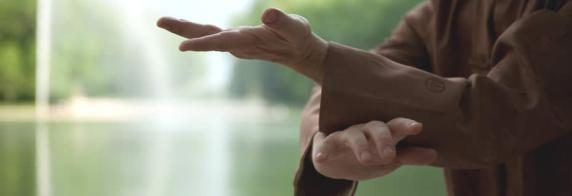
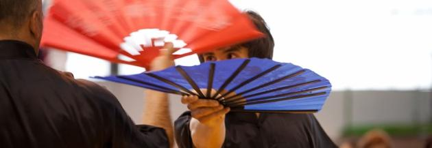

Le Tai Chi Chuan
Un art du mouvement, lent et continu, qui se pratique à tout âge.
Un art martial interne
Le Taichi Chuan est un art martial chinois interne. Art du mouvement, il se pratique à tout âge.
Vous pouvez croiser ses pratiquants seuls ou en groupe dans les parcs ; il se pratique également en salle. La pratique repose sur l'enchaînement de mouvements lents ou rapides, sans interruption, selon l'alternance du Yin et du Yang. Les mouvements ressemblent à un combat au ralenti, chaque geste ayant une application martiale.
À partir du Tao Lu, forme lente et base de l'apprentissage, le Taichi Chuan est riche de multiples pratiques à mains nues et avec armes, en solo, en groupe ou en jeux à deux.

Yang, école de Maître Tung Kai Ying
Notre Taichi Chuan est de forme Yang, de Maître Tung Kai Ying. Le style Tung est riche d'une grande diversité de pratiques, pour le plaisir et l'approfondissement du Taichi Chuan.
L'accent est mis sur la circulation de l'énergie qui développe la conscience du corps, l'équilibre et la vitalité.

Des bienfaits, avec prudence
Dans le plaisir et l'approfondissement de la pratique, chacun peut chercher aisance et mobilité corporelle, détente et relaxation, méditation en mouvement, disponibilité à l'action, qualité de relation aux autres.
C'est une école de patience et de découverte de soi, qui apprend à se centrer et à s'ouvrir à l'autre à travers les infinies richesses de la quête du geste juste.
Le Taichi Chuan est proposé ici comme une discipline de bien-être et de souplesse. Les ressentis varient d'une personne à l'autre et la pratique ne remplace pas un avis médical. Un certificat médical est demandé à la première inscription.
À tout âge, à tout niveau
Aux débutants
Aucun prérequis. Des cours « Débutants et bases » existent sur chaque lieu.
Aux seniors comme aux plus jeunes
La pratique se déroule à son rythme : mouvements lents, enchaînés, sans compétition.
Aux pratiquants confirmés
Approfondissement, perfectionnement, armes et jeux à deux pour poursuivre.
Déroulé d'un cours
Texte d'attente : le déroulé détaillé sera rédigé avec les enseignantes. En général, un cours alterne mise en train, travail de la forme (Tao Lu), pratiques complémentaires et retour au calme. À confirmer.
Tenue souple et confortable conseillée. La durée varie de 1h15 à 1h30 selon les cours, voir le planning.
Envie d'essayer ?
Venez découvrir le Taichi Chuan dans l'un de nos trois lieux. Contactez-nous pour convenir d'une séance.